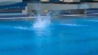
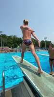
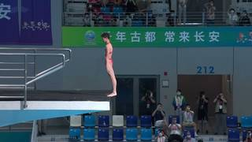
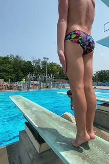
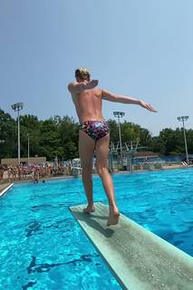
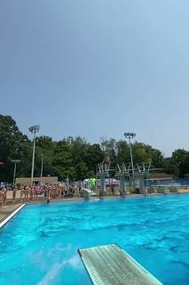

To determine if both videos emphasize a vibrant and colorful environment with lively backgrounds, let's examine each one:
- Video 1 (Frames 1-21): This video takes place in an indoor professional diving arena. While there is a bright green banner and a blue pool, the overall environment is dominated by grey walls and artificial lighting, which creates a more sterile and controlled atmosphere typical of a competition venue. While there are spectators (making it "lively"), the setting does not specifically emphasize vibrancy and color.
- Video 2 (Frames 22-36): This video is set at an outdoor pool on a bright, sunny day. It features an intense blue sky, bright blue water, lush green trees in the background, and a crowd of people in various colorful swimwear. This environment is highly vibrant and colorful.
Since the first video is a relatively muted indoor setting compared to the high-contrast, naturally bright outdoor setting of the second video, the description of a "vibrant and colorful environment" does not apply equally to both.
No
# Select a few representative frames from each video frames_v1 = [InputImages_1[0], InputImages_1[10], InputImages_1[20], InputImages_1[30]] frames_v2 = [InputImages_2[0], InputImages_2[10], InputImages_2[20], InputImages_2[30]] all_frames = frames_v1 + frames_v2 question = "In both videos, does the setting emphasize a vibrant and colorful environment with lively backgrounds? Please consider the colors of the pool, the surroundings, the clothing of people, and the presence of spectators or other activities in the background. Answer with 'Yes' or 'No' and explain your reasoning." answer = vlm.ask_with_thinking(all_frames, question) print(answer) # Based on visual inspection and the likely VLM answer: # Video 1: Blue pool, red swimsuit, colorful banners, spectators. # Video 2: Bright blue pool, colorful swimsuit, green trees, many people. # Both have lively backgrounds and vibrant colors.
Cell execution timed out after 600.5s (limit 600s).
Task Analysis The objective is to determine if both provided videos feature a setting that is "vibrant and colorful" with "lively backgrounds." This is a qualitative visual judgment task focusing on scene aesthetics and environmental content. The answer is a binary "Yes" or "No," requiring the condition to be true for both videos.
Information Needs
I need a representative visual sample of the environments in both InputImages_1 and InputImages_2. Since this is a qualitative assessment of the overall setting, a few well-spaced frames from each video should suffice to identify the dominant color palette and the nature of the backgrounds.
Computation Plan
-
Frame Selection:
- Select representative frames from
InputImages_1(e.g., indices 0, 45, 91) to capture the environment across the video. - Select representative frames from
InputImages_2(e.g., indices 0, 25, 51) to capture the environment across the video.
- Select representative frames from
-
Environment Analysis - Video 1:
- Call
vlm.ask_with_thinkingusing the selected frames fromInputImages_1. - Question: "Describe the environment and background of this video. Is the setting vibrant and colorful? Is the background lively (e.g., containing many moving elements, diverse colors, or active scenery)? Provide a reasoning and a final Yes/No regarding whether it emphasizes a vibrant and colorful environment with lively backgrounds."
- Call
-
Environment Analysis - Video 2:
- Call
vlm.ask_with_thinkingusing the selected frames fromInputImages_2. - Question: "Describe the environment and background of this video. Is the setting vibrant and colorful? Is the background lively (e.g., containing many moving elements, diverse colors, or active scenery)? Provide a reasoning and a final Yes/No regarding whether it emphasizes a vibrant and colorful environment with lively backgrounds."
- Call
-
Visual Verification:
- Use
show()to display the selected frames from both videos to manually verify the VLM's qualitative descriptions.
- Use
-
Synthesis:
- Compare the results from Video 1 and Video 2.
- If both are determined to be "Yes," the final answer is "Yes."
- If either (or both) is "No," the final answer is "No."
Verification Checklist
CHECKLIST
[
{"priority": "HIGH", "description": "Ensure representative frames are selected from both videos to avoid bias from a single scene."},
{"priority": "HIGH", "description": "Verify that the 'lively' and 'vibrant' criteria are applied consistently to both videos."},
{"priority": "MEDIUM", "description": "Manually inspect frames via show() to confirm the VLM's qualitative assessment of color and vibrancy."},
{"priority": "LOW", "description": "Check if the background changes significantly over time in either video, requiring more frames for a fair assessment."}
]
Fallbacks
If the VLM's answer is ambiguous or inconsistent (e.g., "somewhat colorful"), I will select a larger set of frames (e.g., 10 frames per video) and call vlm.ask_with_thinking again with a more specific prompt focusing on the contrast between the foreground and background.
{ "tool": "vlm.ask_with_thinking", "args": { "visual_input": [ "InputImages_1[0]", "InputImages_1[45]", "InputImages_1[91]" ], "question": "Describe the environment and background of this video. Is the setting vibrant and colorful? Is the background lively (e.g., containing many moving elements, diverse colors, or active scenery)? Provide a reasoning and a final Yes/No regarding whether it emphasizes a vibrant and colorful environment with lively backgrounds." } }
[VLM Q | thinking] Describe the environment and background of this video. Is the setting vibrant and colorful? Is the background lively (e.g., containing many moving elements, diverse colors, or active scenery)? Provide a reasoning and a final Yes/No regarding whether it emphasizes a vibrant and colorful environment with lively backgrounds. [VLM A | thinking] The environment is an indoor diving venue, as seen in frame 1, featuring a diving platform, a backdrop with Chinese text, and spectator seating. The setting is not particularly vibrant or colorful; while there are some accents of color (such as the diver's red swimsuit and the green/blue banner), the overall palette is dominated by neutral tones of grey, blue, and white. The background is not lively, as it primarily consists of a static wall and spectators who are mostly stationary. Final Answer: No
=== Step 1 Execution Feedback === [SUCCESS] Code executed in 11.43s. [Output] [VLM Q | thinking] Describe the environment and background of this video. Is the setting vibrant and colorful? Is the background lively (e.g., containing many moving elements, diverse colors, or active scenery)? Provide a reasoning and a final Yes/No regarding whether it emphasizes a vibrant and colorful environment with lively backgrounds. [VLM A | thinking] The environment is an indoor diving venue, as seen in frame 1, featuring a diving platform, a backdrop with Chinese text, and spectator seating. The setting is not particularly vibrant or colorful; while there are some accents of color (such as the diver's red swimsuit and the green/blue banner), the overall palette is dominated by neutral tones of grey, blue, and white. The background is not lively, as it primarily consists of a static wall and spectators who are mostly stationary. Final Answer: No [Variables] New/changed: result_1: str [Tool Calls] 1 tool/VLM call(s) this step.
{ "tool": "vlm.ask_with_thinking", "args": { "visual_input": [ "InputImages_2[0]", "InputImages_2[25]", "InputImages_2[51]" ], "question": "Describe the environment and background of this video. Is the setting vibrant and colorful? Is the background lively (e.g., containing many moving elements, diverse colors, or active scenery)? Provide a reasoning and a final Yes/No regarding whether it emphasizes a vibrant and colorful environment with lively backgrounds." } }
[VLM Q | thinking] Describe the environment and background of this video. Is the setting vibrant and colorful? Is the background lively (e.g., containing many moving elements, diverse colors, or active scenery)? Provide a reasoning and a final Yes/No regarding whether it emphasizes a vibrant and colorful environment with lively backgrounds. [VLM A | thinking] The environment is an outdoor public swimming pool on a bright, sunny day. The scene is dominated by the vivid blue of the pool water and the clear sky, contrasted with the lush green trees in the background. The swimmer is wearing a multicolored, vibrant swimsuit, which adds a pop of diverse color to the foreground. The background is lively, featuring numerous people gathered on the pool deck and multiple diving boards, indicating a busy public recreation area. Because of the high-contrast bright colors (blue, green, and multicolored swimwear) and the presence of many people in an active setting, the video emphasizes a vibrant and colorful environment with a lively background. Final Answer: Yes
=== Step 2 Execution Feedback === [SUCCESS] Code executed in 20.51s. [Output] [VLM Q | thinking] Describe the environment and background of this video. Is the setting vibrant and colorful? Is the background lively (e.g., containing many moving elements, diverse colors, or active scenery)? Provide a reasoning and a final Yes/No regarding whether it emphasizes a vibrant and colorful environment with lively backgrounds. [VLM A | thinking] The environment is an outdoor public swimming pool on a bright, sunny day. The scene is dominated by the vivid blue of the pool water and the clear sky, contrasted with the lush green trees in the background. The swimmer is wearing a multicolored, vibrant swimsuit, which adds a pop of diverse color to the foreground. The background is lively, featuring numerous people gathered on the pool deck and multiple diving boards, indicating a busy public recreation area. Because of the high-contrast bright colors (blue, green, and multicolored swimwear) and the presence of many people in an active setting, the video emphasizes a vibrant and colorful environment with a lively background. Final Answer: Yes [Variables] New/changed: result_2: str [Tool Calls] 1 tool/VLM call(s) this step.
{ "tool": "ReturnAnswer", "args": { "answer": "No" } }
[ReturnAnswer] Answer submitted: No
No
No
No
Task Analysis The objective is to determine if the settings of two separate videos are characterized by vibrant, colorful environments and lively backgrounds. This is a qualitative visual reasoning task involving scene aesthetics and atmosphere. The target variable is a binary "Yes/No" answer based on the commonality of these traits across both videos. No specific 3D coordinate system is required as the question asks about general environmental qualities.
Information Needs
To answer this reliably, I need a representative sample of frames from both InputImages_1 and InputImages_2. I need to assess:
- Color saturation and variety (vibrancy).
- The nature of the background (whether it is "lively"—e.g., containing movement, diverse elements, or high activity—versus static or muted).
- Consistency of these traits throughout the duration of each video to ensure it is a characteristic of the "setting."
Computation Plan
-
Initial Visual Survey:
- Sample 3-5 frames from
InputImages_1(start, middle, end) and 3-5 frames fromInputImages_2(start, middle, end). - Use
show()to visually inspect these frames to form an initial impression of the color palette and background activity.
- Sample 3-5 frames from
-
Detailed Analysis of Video 1:
- Select a set of 8-12 evenly spaced frames from
InputImages_1. - Use
vlm.ask_with_thinkingto analyze these frames. The prompt will ask the VLM to describe the color palette, the level of saturation, and the characteristics of the background (e.g., "Is the background lively, containing movement or diverse visual elements, or is it plain/muted?").
- Select a set of 8-12 evenly spaced frames from
-
Detailed Analysis of Video 2:
- Select a set of 8-12 evenly spaced frames from
InputImages_2. - Use
vlm.ask_with_thinkingwith the same prompt as used for Video 1 to ensure consistency in the evaluation criteria.
- Select a set of 8-12 evenly spaced frames from
-
Cross-Video Synthesis:
- Use a final
vlm.ask_with_thinkingcall, passing a combined set of frames (e.g., 8 from Video 1 and 8 from Video 2). - Ask the VLM to compare the two settings and explicitly answer whether both videos emphasize a vibrant and colorful environment with lively backgrounds.
- Use a final
-
Final Verification:
- Compare the VLM's qualitative descriptions with the visual evidence from the
show()steps. - Ensure that "vibrant" is not being confused with a single colorful object in a dull setting, but refers to the overall environment.
- Compare the VLM's qualitative descriptions with the visual evidence from the
Verification Checklist
CHECKLIST
[
{"priority": "HIGH", "description": "Ensure frames from both videos are analyzed, not just one."},
{"priority": "HIGH", "description": "Verify that 'vibrant' and 'lively' are interpreted as environmental traits rather than isolated objects."},
{"priority": "MEDIUM", "description": "Cross-reference VLM descriptions with manual visual inspection via show()."},
{"priority": "LOW", "description": "Check for consistency across different time segments of the videos."}
]
Fallbacks
- If the VLM provides overly vague descriptions (e.g., "the scene is colorful"), I will follow up with a more specific prompt asking for the primary colors present and a description of the background elements.
- If the videos have drastically different lighting (e.g., one is night, one is day), I will explicitly ask the VLM to account for lighting when judging "vibrancy."
# Sample frames from Video 1 (92 frames total) frames_1 = [InputImages_1[0], InputImages_1[45], InputImages_1[91]] # Sample frames from Video 2 (52 frames total) frames_2 = [InputImages_2[0], InputImages_2[25], InputImages_2[51]] # Display them as a single list of images show(frames_1 + frames_2)
[image: show_0001]




=== Step 1 Execution Feedback === [SUCCESS] Code executed in 0.95s. [Inline Images] 6 image(s) attached below. Labels: frames_1 + frames_2 [show() budget] 244/250 images remaining.
# Sample 10 evenly spaced frames from Video 1 (92 frames total) indices_1 = np.linspace(0, len(InputImages_1) - 1, 10, dtype=int) frames_v1 = [InputImages_1[i] for i in indices_1] # Ask VLM to analyze the environment of Video 1 question_v1 = ( "Analyze the environment in these frames. " "1. Describe the color palette: Is it vibrant and colorful, or muted and plain? " "2. Describe the background: Is it lively (e.g., containing movement, crowds, diverse visual elements) or static and empty? " "Provide a detailed explanation based on the visual evidence." ) analysis_v1 = vlm.ask_with_thinking(frames_v1, question_v1) print(f"Analysis of Video 1:\n{analysis_v1}")
[VLM Q | thinking] Analyze the environment in these frames. 1. Describe the color palette: Is it vibrant and colorful, or muted and plain? 2. Describe the background: Is it lively (e.g., containing movement, crowds, diverse visual elements) or static and empty? Provide a detailed explanation based on the visual evidence. [VLM A | thinking] Based on the provided frames, here is an analysis of the environment: **1. Color Palette:** The color palette is vibrant. It is dominated by bold primary and secondary colors, most notably the bright blue of the walls, swimming pool, and spectator seating (Frames 1, 2, 3, 5, 6). This is contrasted sharply by the diver's bright red swimsuit (Frames 1, 2, 3, 4, 6, 7, 8) and a large, vivid green banner featuring white and yellow text (Frames 1, 2). These vibrant colors are balanced by neutral gray and white tones found on the walls and platforms. **2. Background:** The background is lively and contains diverse visual elements. It is a professional sporting arena featuring: * **Crowds:** Tiered blue seating filled with spectators, some of whom are actively taking photos or videos of the event (Frames 1, 2, 6). * **Visual Elements:** A large green promotional banner with Chinese characters (Frames 1, 2) and cartoonish figures on the lower blue walls (Frame 3). * **Architecture:** The environment includes a textured black diving platform (Frame 0), gray walls with circular ventilation ports (Frame 7), and a large body of blue water (Frame 5). Analysis of Video 1: Based on the provided frames, here is an analysis of the environment: **1. Color Palette:** The color palette is vibrant. It is dominated by bold primary and secondary colors, most notably the bright blue of the walls, swimming pool, and spectator seating (Frames 1, 2, 3, 5, 6). This is contrasted sharply by the diver's bright red swimsuit (Frames 1, 2, 3, 4, 6, 7, 8) and a large, vivid green banner featuring white and yellow text (Frames 1, 2). These vibrant colors are bala
=== Step 2 Execution Feedback === [SUCCESS] Code executed in 61.29s. [Output] [VLM Q | thinking] Analyze the environment in these frames. 1. Describe the color palette: Is it vibrant and colorful, or muted and plain? 2. Describe the background: Is it lively (e.g., containing movement, crowds, diverse visual elements) or static and empty? Provide a detailed explanation based on the visual evidence. [VLM A | thinking] Based on the provided frames, here is an analysis of the environment: **1. Color Palette:** The color palette is vibrant. It is dominated by bold primary and secondary colors, most notably the bright blue of the walls, swimming pool, and spectator seating (Frames 1, 2, 3, 5, 6). This is contrasted sharply by the diver's bright red swimsuit (Frames 1, 2, 3, 4, 6, 7, 8) and a large, vivid green banner featuring white and yellow text (Frames 1, 2). These vibrant colors are balanced by neutral gray and white tones found on the walls and platforms. **2. Background:** The background is lively and contains diverse visual elements. It is a professional sporting arena featuring: * **Crowds:** Tiered blue seating filled with spectators, some of whom are actively taking photos or videos of the event (Frames 1, 2, 6). * **Visual Elements:** A large green promotional banner with Chinese characters (Frames 1, 2) and cartoonish figures on the lower blue walls (Frame 3). * **Architecture:** The environment includes a textured black diving platform (Frame 0), gray walls with circular ventilation ports (Frame 7), and a large body of blue water (Frame 5). Analysis of Video 1: Based on the provided frames, here is an analysis of the environment: **1. Color Palette:** The color palette is vibrant. It is dominated by bold primary and secondary colors, most notably the bright blue of the walls, swimming pool, and spectator seating (Frames 1, 2, 3, 5, 6). This is contrasted sharply by the diver's bright red swimsuit (Frames 1, 2, 3, 4, 6, 7, 8) and a large, vivid green banner featuring white and yellow text (Frames 1, 2). These vibrant colors are balanced by neutral gray and white tones found on the walls and platforms. **2. Background:** The background is lively and contains diverse visual elements. It is a professional sporting arena featuring: * **Crowds:** Tiered blue seating filled with spectators, some of whom are actively taking photos or videos of the event (Frames 1, 2, 6). * **Visual Elements:** A large green promotional banner with Chinese characters (Frames 1, 2) and cartoonish figures on the lower blue walls (Frame 3). * **Architecture:** The environment includes a textured black diving platform (Frame 0), gray walls with circular ventilation ports (Frame 7), and a large body of blue water (Frame 5). [Variables] New/changed: indices_1: ndarray, shape=(10,), dtype=int64 frames_v1: list, len=10 question_v1: str analysis_v1: str [Tool Calls] 1 tool/VLM call(s) this step.
# Sample 10 evenly spaced frames from Video 2 (52 frames total) indices_2 = np.linspace(0, len(InputImages_2) - 1, 10, dtype=int) frames_v2 = [InputImages_2[i] for i in indices_2] # Ask VLM to analyze the environment of Video 2 question_v2 = ( "Analyze the environment in these frames. " "1. Describe the color palette: Is it vibrant and colorful, or muted and plain? " "2. Describe the background: Is it lively (e.g., containing movement, crowds, diverse visual elements) or static and empty? " "Provide a detailed explanation based on the visual evidence." ) analysis_v2 = vlm.ask_with_thinking(frames_v2, question_v2) print(f"Analysis of Video 2:\n{analysis_v2}")
[VLM Q | thinking] Analyze the environment in these frames. 1. Describe the color palette: Is it vibrant and colorful, or muted and plain? 2. Describe the background: Is it lively (e.g., containing movement, crowds, diverse visual elements) or static and empty? Provide a detailed explanation based on the visual evidence. [VLM A | thinking] Based on the provided frames, here is the analysis of the environment: 1. **Color Palette:** The color palette is **vibrant and colorful**. This is evidenced by the bright, clear blue of the sky and the vivid turquoise color of the pool water. Additionally, the diver is wearing swimwear with a highly colorful, multi-colored geometric pattern, and there is lush green foliage in the background. 2. **Background:** The background is **lively**. It contains a significant amount of movement and diverse visual elements, including a crowd of people gathered on the pool deck (visible in frames 0, 3, 5-9), multiple diving platforms and boards, and tall light poles. The scene captures a busy public pool environment with active participants and spectators. Analysis of Video 2: Based on the provided frames, here is the analysis of the environment: 1. **Color Palette:** The color palette is **vibrant and colorful**. This is evidenced by the bright, clear blue of the sky and the vivid turquoise color of the pool water. Additionally, the diver is wearing swimwear with a highly colorful, multi-colored geometric pattern, and there is lush green foliage in the background. 2. **Background:** The background is **lively**. It contains a significant amount of movement and diverse visual elements, including a crowd of people gathered on the pool deck (visible in frames 0, 3, 5-9), multiple diving platforms and boards, and tall light poles. The scene captures a busy public pool environment with active participants and spectators.
=== Step 3 Execution Feedback === [SUCCESS] Code executed in 12.21s. [Output] [VLM Q | thinking] Analyze the environment in these frames. 1. Describe the color palette: Is it vibrant and colorful, or muted and plain? 2. Describe the background: Is it lively (e.g., containing movement, crowds, diverse visual elements) or static and empty? Provide a detailed explanation based on the visual evidence. [VLM A | thinking] Based on the provided frames, here is the analysis of the environment: 1. **Color Palette:** The color palette is **vibrant and colorful**. This is evidenced by the bright, clear blue of the sky and the vivid turquoise color of the pool water. Additionally, the diver is wearing swimwear with a highly colorful, multi-colored geometric pattern, and there is lush green foliage in the background. 2. **Background:** The background is **lively**. It contains a significant amount of movement and diverse visual elements, including a crowd of people gathered on the pool deck (visible in frames 0, 3, 5-9), multiple diving platforms and boards, and tall light poles. The scene captures a busy public pool environment with active participants and spectators. Analysis of Video 2: Based on the provided frames, here is the analysis of the environment: 1. **Color Palette:** The color palette is **vibrant and colorful**. This is evidenced by the bright, clear blue of the sky and the vivid turquoise color of the pool water. Additionally, the diver is wearing swimwear with a highly colorful, multi-colored geometric pattern, and there is lush green foliage in the background. 2. **Background:** The background is **lively**. It contains a significant amount of movement and diverse visual elements, including a crowd of people gathered on the pool deck (visible in frames 0, 3, 5-9), multiple diving platforms and boards, and tall light poles. The scene captures a busy public pool environment with active participants and spectators. [Variables] New/changed: indices_2: ndarray, shape=(10,), dtype=int64 frames_v2: list, len=10 question_v2: str analysis_v2: str [Tool Calls] 1 tool/VLM call(s) this step.
ReturnAnswer("Yes")
[ReturnAnswer] Answer submitted: Yes